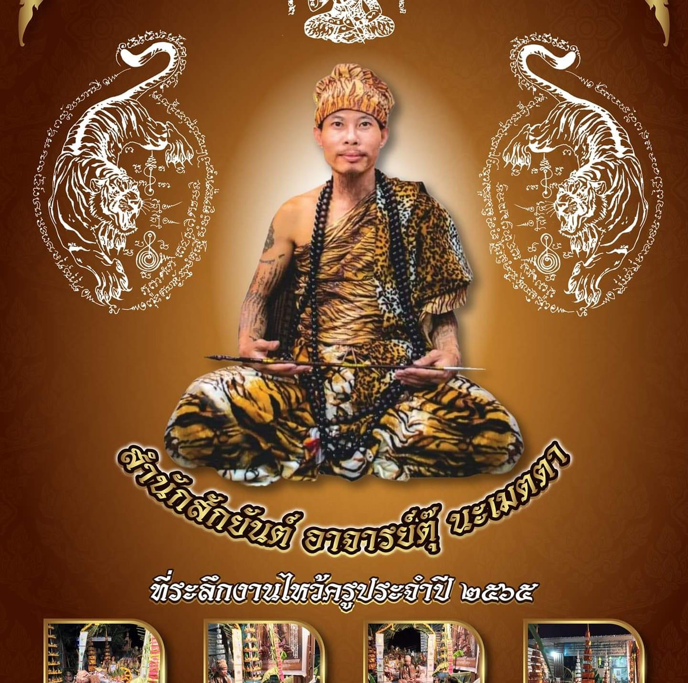

Ajarn Tu Nametta · สำนักสักยันต์
ศิลปะความเชื่อโบราณที่สืบทอดจากครูบาอาจารย์สู่ปัจจุบัน
สายขาวเขมร แก้คุณโสย โดย อาจารย์ตู๋ นะเมตตา
Ajarn Tu Nametta
เลือกลายที่เหมาะกับชะตาและจุดประสงค์ของท่าน
เมตตามหานิยม คุ้มครองผู้สวมใส่จากสิ่งอัปมงคลทั้งปวง เสริมโชคลาภและป้องกันภัย คุ้มครองดวงชะตา เป็นยันต์ศักดิ์สิทธิ์ที่นิยมมากที่สุด
*หมายเหตุ: กดตรงรูปภาพเพื่อขยายภาพ*
เมตตามหานิยม คุ้มครองผู้สวมใส่จากสิ่งอัปมงคลทั้งปวง เสริมโชคลาภและป้องกันภัย คุ้มครองดวงชะตา เป็นยันต์ศักดิ์สิทธิ์ที่นิยมมากที่สุด
*หมายเหตุ: กดตรงรูปภาพเพื่อขยายภาพ*
เมตตามหานิยม คุ้มครองผู้สวมใส่จากสิ่งอัปมงคลทั้งปวง เสริมโชคลาภและป้องกันภัย คุ้มครองดวงชะตา เป็นยันต์ศักดิ์สิทธิ์ที่นิยมมากที่สุด
*หมายเหตุ: กดตรงรูปภาพเพื่อขยายภาพ*
เมตตามหานิยม คุ้มครองผู้สวมใส่จากสิ่งอัปมงคลทั้งปวง เสริมโชคลาภและป้องกันภัย คุ้มครองดวงชะตา เป็นยันต์ศักดิ์สิทธิ์ที่นิยมมากที่สุด
*หมายเหตุ: กดตรงรูปภาพเพื่อขยายภาพ*
เสริมดวงความรัก เมตตามหานิยม ให้ผู้คนรักใคร่เมตตา เหมาะสำหรับผู้ทำงานบริการ ค้าขาย หรือต้องการให้ผู้อื่นชื่นชอบ
เรียกทรัพย์ เสริมโชคลาภ การค้า การงาน เหมาะสำหรับพ่อค้าแม่ค้า นักธุรกิจ ผู้ต้องการความมั่งคั่ง ช่วยเปิดทางโชคและโอกาสใหม่ๆ
ป้องกันภัยอันตราย คุ้มครองจากอุบัติเหตุ ศัตรูคิดร้าย และสิ่งชั่วร้ายทั้งปวง เหมาะสำหรับผู้ทำงานเสี่ยงภัย ต้องการความปลอดภัยในชีวิต
เสน่ห์มหานิยม ดึงดูดความรัก ทำให้ผู้พบเห็นหลงใหล เหมาะสำหรับผู้โสดที่ต้องการคู่ครอง หรือต้องการเสริมความสัมพันธ์ให้แน่นแฟ้น
คุ้มครองทั้ง ๘ ทิศ ป้องกันภัยจากทุกทิศทาง เสริมบารมีและความสำเร็จในทุกด้านของชีวิต เป็นยันต์ครอบจักรวาลที่ทรงพลังมาก
เสริมหน้าที่การงาน ให้ผู้ใหญ่รัก เจ้านายเมตตา เหมาะสำหรับผู้ต้องการความก้าวหน้าในอาชีพ ช่วยให้ได้รับการสนับสนุนและโอกาสที่ดี
* ลายยันต์ทุกชนิดออกแบบตามความเหมาะสมของแต่ละบุคคล ปรึกษาอาจารย์ก่อนตัดสินใจ
About the Master
อาจารย์ตู๊ นะเมตตา ผู้เชี่ยวชาญสักยันต์สายขาวเขมร แก้คุณโสย ผู้สืบทอดวิชาโดยตรงจากครูบาอาจารย์ผู้ทรงวิทยาคม ทุกลายสักผ่านพิธีปลุกเสกอย่างถูกต้องตามตำราโบราณ
สำนักตั้งอยู่ในบรรยากาศศักดิ์สิทธิ์ ล้อมรอบด้วยพระพุทธรูปและเครื่องสักการะโบราณนับร้อยองค์ ทุกการสักคือพิธีกรรมที่ผสมผสาน พุทธ พราหมณ์ และไสยศาสตร์ อย่างลงตัว
"นะ โม พุท ธา ยะ — เชื่อมั่น ศรัทธา บูชาครู"
Studio History
อาจารย์ตู๋เริ่มศึกษาวิชาสักยันต์ตั้งแต่ยังเยาว์วัย รับการถ่ายทอดวิชาโดยตรงจากครูบาอาจารย์ผู้ทรงคุณวุฒิในสายขาวเขมร
เปิดสำนักสักยันต์อย่างเป็นทางการ นำวิชาความรู้ที่ได้รับมาให้บริการแก่ผู้ศรัทธาทั้งในและต่างประเทศ
จัดพิธีไหว้ครูประจำปีทุกวันที่ 15 เมษายน รวบรวมลูกศิษย์จากทั่วโลกมาร่วมสักการะบูชาครู และต่ออายุพลังยันต์
สำนักเป็นที่รู้จักในระดับนานาชาติ รับลูกค้าจากทั่วโลก ยังคงรักษาวิถีดั้งเดิมและความศักดิ์สิทธิ์ของพิธีกรรมอย่างเคร่งครัด
"ยันต์ทุกลายล้วนมีพลังและความหมายเฉพาะตัว — ไม่ใช่เพียงลวดลาย แต่คือพันธสัญญาระหว่างผู้สักและจักรวาล"
Client Reviews
ประสบการณ์จริงจากผู้ที่เคยสักกับอาจารย์ตู๋
รู้สึกประทับใจมากกับความละเอียดและความตั้งใจของอาจารย์ ลายออกมาสวยงามและมีความหมายลึกซึ้ง รู้สึกได้ถึงพลังที่แตกต่างจากสักทั่วไปจริงๆ
Came all the way from Singapore specifically for this. The master explained every detail and the ceremony was incredibly meaningful. A truly life-changing experience.
ไม่ใช่แค่การสัก แต่คือพิธีกรรมที่ศักดิ์สิทธิ์ อาจารย์มีความเชี่ยวชาญและมีความเคารพต่อศาสตร์โบราณนี้มาก แนะนำทุกคนที่อยากสัมผัสของแท้
J'ai voyagé depuis Paris pour vivre cette expérience unique. Le maître est exceptionnel, chaque tatouage est une œuvre d'art spirituelle. Je reviendrai certainement.
อาจารย์เลือกลายที่เหมาะสมกับตัวเองมากๆ รู้สึกว่าท่านอ่านชะตาได้จริง หลังสักแล้วชีวิตดีขึ้นหลายอย่าง ทั้งการงานและความสัมพันธ์
The atmosphere of the studio is magical — surrounded by Buddha statues and sacred objects. Ajarn Tu is welcoming and professional. Highly recommend for authentic Sak Yant.
นัดหมายกับอาจารย์ตุ๊ — ปรึกษาก่อนตัดสินใจ
👉 จองคิวสักตอนนี้Get in Touch
ติดต่อเพื่อนัดหมาย ปรึกษาลาย หรือสอบถามข้อมูลเพิ่มเติม